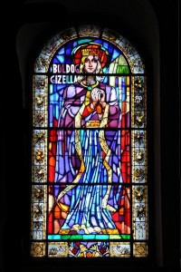

|
|
Veszprém ist die Königinnenstadt von
Ungarn, ist historisch eine der bedeutendsten Städte
Ungarns. Sie liegt auf einem lang gestreckten
Felsenvorsprung des romantischen Bakony-Gebirges unweit des
Balatons (Plattensee) mit seinen großen Weinbaugebieten.
Veszprém zählt rd. 65.000 Einwohner und ist Sitz des
gleichnamigen Komitates (Bundesland, Ungarn hat heute 16
davon), Universitätsstadt, Bischofssitz und kulturelles
Zentrum der Region.
Die Stadt
liegt am Schnittpunkt dreier ungarischer Landschaften: Sie
grenzt im Norden an den Bakonywald, im Süden an das Balaton-Felvidék
(Plattensee-Hochland) und im Osten an die Große Ungarische
Tiefebene, die geologisch schon hier beginnt, amtlich jedoch
erst östlich der Donau. Die Zentrale Lage förderte die
Entwicklung von Veszprém in hohem Maße, die gebirgige Lage
wirkt jedoch dagegen.
|
|
|
Die altertümliche Hauptstadt des
Bakony-Gebirges liegt mehr malerisch als praktisch auf fünf
mächtigen Hügeln. Vom Kellergeschoß des
einen Hauses sieht man den Nachbarn ins Dach. Und die Straßen
sind wie Achterbahnen. Das muss man gesehen haben! Auf einem schmalen,
einst befestigtem Felsrücken drängen sich Dom, Palais
und Giselakapelle.
Michaelsdom und Bischofspalais sind barocke Bauten,
den Dom hat man neoromanisch restauriert. |
|
|
 |
Erster
Bischofssitz in Ungarn, gegründet vom Hl. Stafan, dem ersten
König der Ungarn.
Am
Platz des
Palais stand
früher das mittelalterliche
Königinnen-Schloß. Ungarns
Königinnen
liebten Veszprém und mehrere von ihnen lebte hier.
|
|
Die
erste war Gisela von
Bayern,
die Frau des ersten ungarischen Königs, des Hl. Stephans. Sie
stiftete die Giselakapelle im Jahre 1030 n.Chr. Diese sieht in
ihrer heutigen Form Spätbarock aus, enthält aber
innen noch
Fresken aus dem 13. Jahrhundert und ist eines der
schönsten ungarischen Baudenkmäler.
Das wunderschöne Fenster aus Glasmosaik links erinnert an die
Heilige Gisela und ziert die Stefansbasilika von Budapest. |
|
| |
| |
| |
|
Ungarn-Tourist Team

|
| |
| |
|